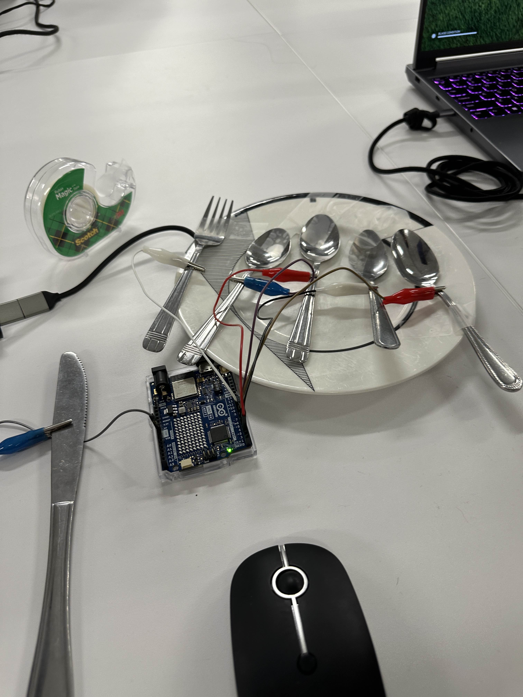
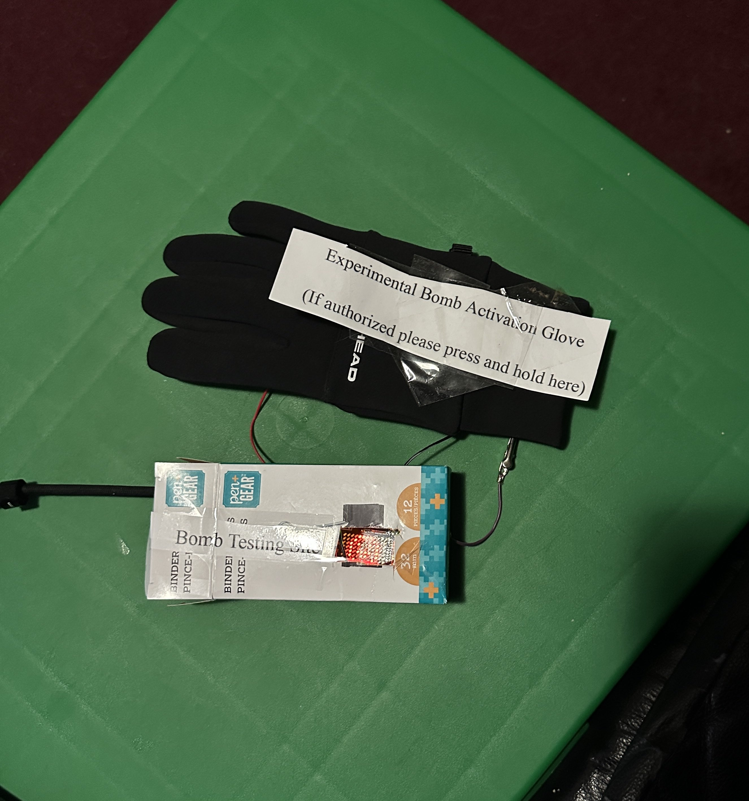
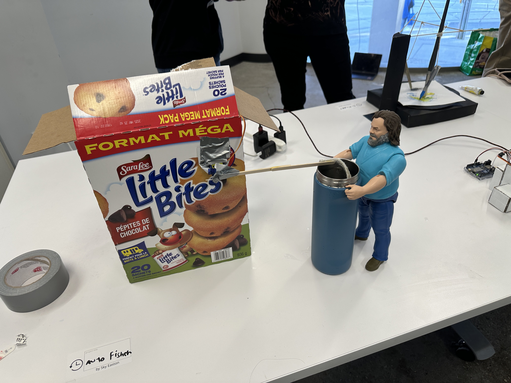

Some of my Favorite Projects I Completed during my First Year at OCAD
1 / 3

Physical Computing #1 Alt Controller
2 / 3

Physical Computing #2 Tiny Film Fest
3 / 3

Physical Computing #3 You've Been Notified
❮
❯
Atelier 0 Final Video
Game Design Gameplay Demo
Now make some Art Yourself :D